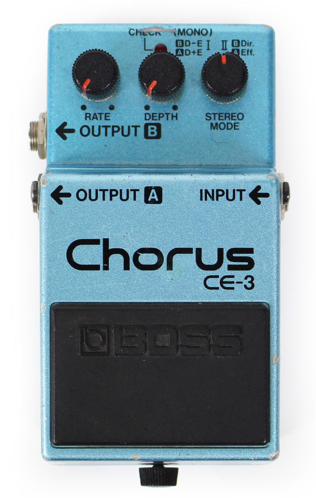
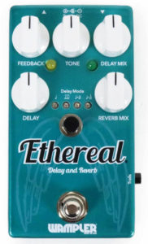
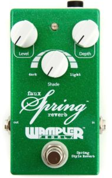
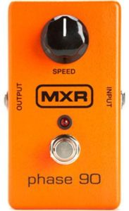
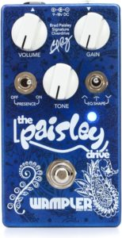

Not many acoustic guitars in my collection. When I was 16 I bought my Ibanez Performance PF10, which I still have as my first “nice and affordable” acoustic guitar. Later in 1999 I was traveling between Lawndale, California and Hollywood in search of a Guild guitar. Finally I ended up in Lawndale again playing a lot of guitars, also some out of my league. Though the Guild DCE-1hr was one I kept playing for a while. Other more expensive guitars may have sounded warmer, but this one was in my opinion better for recording. With a more balanced and even sound. In 2005 I bought my Ovation CS257 from a store in Olney, Maryland. This is my main live acoustic guitar for 15 years now! Also the guitar I use a lot for songwriting and recording demos. Other than that I have a cheap nylon string Spanish guitar, but don’t really use that one at the moment.
My Electric guitars
My first electric guitar was a Westone Spectrum MX from Japan. I bought that one when I was around 13 or 14 years old. This is the guitar I were using on the single CD with Fatally flawed called “First train to Paradise” It was my main guitar for years first completely stock, but later equipped with Seymour Duncan pickups, the SH1 in the bridge and SSL1 at the neck. This guitar is still in my collection, but doesn’t get a lot of playing time anymore. I think when I was around 17 or 18 I bought a second Westone guitar the X70. Also with this guitar I replaced the bridge pickup for a Seymour Duncan SH4. This guitar is also still in my collection, but more retired as well. in 1996 I bought my first Hamer USA guitar in Pueblo Colorado! This is and American made Special FM of course with Seymour Duncan on it, like almost all my guitars. Between 2000 and 2002 I bought 2 Hamer USA guitars! The Vanguard a silver sparkle semi hollow body guitar with P90’s and the Hamer Centaura with my first Floyd Rose system on it!! The Special FM was my main recording and live gig guitar followed by the other 2 Hamers. In 2018 I bought the G&L ASAT Classic guitar. First guitar with G&L Pickups and first Telecaster guitar 25.5 inch scale neck. On our last single “Picture frame” you can hear the G&L in the guitar solo for the first time!
My Super special amazing rad dude Effects
Just adding a part two to the effects journey! Just added some new stuff to my collection and actually working on a new pedalboard as we speak. As far as I can see now it will have 13 units on it! For the moment I will start with 9. I don’t wanna put stuff on it I don’t like or use anymore, so I’ll probably stick with 9 for the moment, but will add more later this year. New additions are a Wampler Ethereal, a Wampler Faux Spring Reverb and a MXR Phase 90. What I like about all the Wampler stuff and the MXR Phase 90 is that they are true bypass. So that means that you blend the effect over your original sound.In my early days I had some cheap stomp boxes and had 1 nice Chorus CE3 from Boss. My main distortion sound came from a “Tube Mania” made by Arion in the 80’s Later when playing with bands I switched to a Digitech RP3. I really had some great tones and sounds from that unit, but in 2006 it got completely destroyed. For a release party I was in a hurry to get something else and ended up with a Zoom G7.1ut. I am still using it today, but the things I don’t like about it, is that you have to create overdrive/distortions sounds out of amp modeling. I really hate all that amp modeling stuff you see on amplifiers with way to much knobs and want to have my sound as analog as possible. Last year I started building a new pedalboard and I think this will be my new future. At the moment I have a Boss CS- compressor going into a Digitech “Bad Monkey” through a Digitech “Hot Rod” distortion to a Wampler “Paisley drive” into a Boss CE3 Chorus into a Ibanez Delay. My Dunlop Cry Baby is in the beginning of the chain. I am swapping gear when able at the moment and for sure I will add more Wampler pedals to it in the near future. This all goes straight into the clean channel of my Peavey Classic 30 amp. Searching for sounds will probably never end, depending on recording guitars or playing live when you wanna cut through a mix, I will always be on the look out for a better sound :)





My Strings
For all my Hamer USA guitars I am using La Bella HRS-M Strings. This is something from the days I was playing in rock bands. I’ve tried a lot of brands, but La Bella strings were the only one able to last for a long time! For my Ovation I use EJ15 strings because I play a lot of leadguitar on it. They are light and more easy to bend. They still have a great tone and let this guitar cut through a mix especially during live performances. On my Guild guitar I am using the EJ26 strings from D’Addario. I like the tone and the balance between the light top and more heavy bottom. The guild is my main recording acoustic.